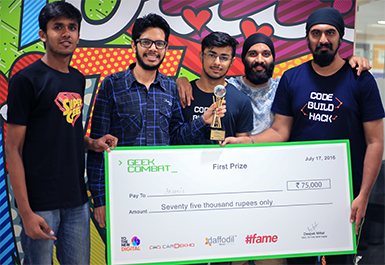

As Acquia’s Community Partner, TO THE NEW will leverage Acquia’s products and services to deliver best-in-class digital experiences for its clients across the globe. The partnership will enable TO THE NEW to further expand its open source content management offerings by developing and delivering custom publishing solutions utilizing Acquia's value-added products and services.
Newers Times
August 16
TO THE NEW joins Acquia Community Partner Program
TO THE NEW presented at GR8Conf US and FullStack London
Puneet Behl from Grails team spoke at the US edition of GR8Conf. His spoke on ‘Dockerize it all’ and ‘Groovy for Java Developers’. Komal Jain from Mean team was a speaker at the recently held FullStack conference. She spoke on ‘Reconstructing the web with Polymer’, focusing on the pain areas in front-end web development and introduced everyone to the world of Polymer.
TO THE NEW organizes GeekCombat, a 2-day hackathon
The first edition of GeekCombat was co-sponsored by CarDekho, Daffodil Software and #fame. The 2-day hackathon witnessed over 300 participants from various companies including Sapient, TCS, Daffodil Software, Xebia, RBS, Girnar Software and Wipro. GeekCombat focused on Smarter India theme also served as a collaborative platform to learn and network.



TO THE NEW joins Acquia Community Partner Program
As Acquia’s Community Partner, TO THE NEW will leverage Acquia’s products and services to deliver best-in-class digital experiences for its clients across the globe. The partnership will enable TO THE NEW to further expand its open source content management offerings by developing and delivering custom publishing x solutions utilizing Acquia's value-added products and services.
TO THE NEW presented at GR8Conf US and FullStack London
Puneet Behl from Grails team spoke at the US edition of GR8Conf. His spoke on ‘Dockerize it all’ and ‘Groovy for Java Developers’. Komal Jain from Mean team was a speaker at the recently held FullStack conference. She spoke on ‘Reconstructing the web with Polymer’, focusing on the pain areas in front-end web development and introduced everyone to the world of Polymer.